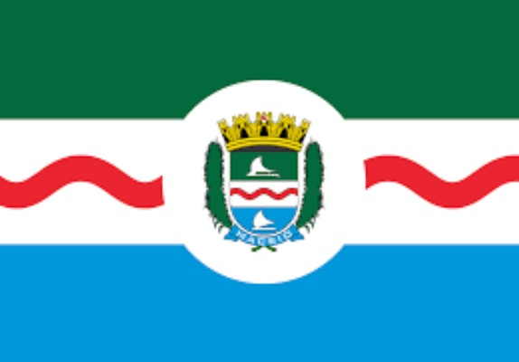

Estados e algumas capitais
Rio Branco
Rio Brano é a capital do Acre (AC).
Área territorial: 8.835km²
População: 350mil habitantes.
Curiosidade: de “Capital da Natureza”, em razão dos seus atributos naturais.
São Paulo

São Paulo capital do estado de São Paulo
Área territorial: 1.521 km²
População: 12 milhões de habitantes
Curiosidade: maior cidade do país é considerada uma metrópole mundial brasileira.
Manaus

Manaus Manaus é a capital do estado do Amazonas
Área territorial: 11.401km²
População: 2 milhões de habitantes.
Curiosidade: situada no centro da floresta amazônica.
Salvador

Salvado capital do estado da Bahia
Área territorial: 693,8 km²
População: 2,7 milhões de habitantes
Curiosidade: foi a primeira do BRASIL.
Maceió

Maceió capital do estado de Alagoas
Área territorial: 509,6km²
População: 1.012.387 de habitante
Curiosidade: Muito procurada pelos turistas nos meses de verão centro financeiro, social e cultural de Alagoas.
Macapá

Macapá capital do estado de São
Área territorial: 6.407km²
População: 493.634 habitantes
Curiosidade: a única que não faz ligação com outras capitais por meio de rodovias.